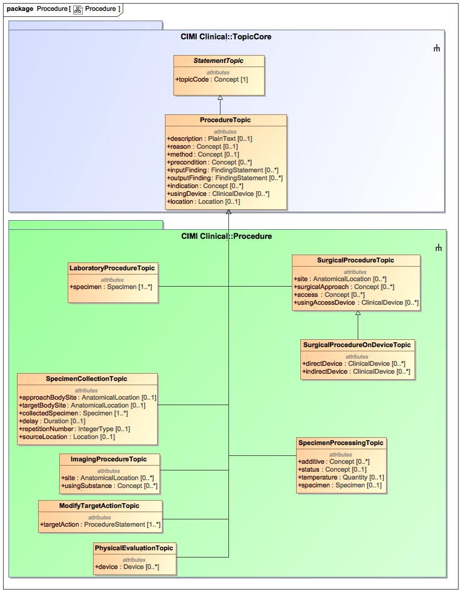

The Procedure package contains action topic classes which are not medication-related activities nor patient education activities. Many of the classes in this package are still experimental and in active development.
Note to Orders and Observations: The Specimen Collection and Specimen Processing classes require review by the Orders and Observations Working Group. Both classes are based on the latest Specimen DAM.
